<footer>
  <div class="centered clearfix">
    <div class="footer-logo">
      

    </div>
    <div class="footer-contact">
      <h3>Contacto</h3>
      <p><i class='bx bxs-envelope'></i><a href="mailto:">fake.com</a></p>
      <p><i class='bx bxs-phone'></i><a href="tel:">123-456-7890</a></p>
      <p><i class='bx bxs-store' ></i><a href="">123 Fake St<br />Fake, PA 11111</a></p>
    </div>
    <div class="footer-navigation">
      <div class="footer-links-holder">
        <h3>Web</h3>
        <ul class="footer-links">
          <li><a routerLink="/inicio">Inicio</a></li>
          <li><a routerLink="/cursos-y-jornadas">Cursos</a></li>
          <li><a routerLink="/sobremi">Sobre mí</a></li>
          <li><a routerLink="/insumos">Insumos</a></li>
          <li><a routerLink="/contacto">Contacto</a></li>
        </ul>
      </div>
      <div class="footer-links-holder">
        <h3>Siguenos en</h3>
        <ul class="footer-links">
          <div class="social">
            <i class='bx bxl-facebook-square'><a href="https://www.facebook.com/" class="facebook"></a></i>
            <i class='bx bxl-instagram-alt'><a href="https://www.instagram.com/" class="instagram"></a></i>
          </div>
        </ul>
      </div>
    </div>
  </div>
  <div class="bottom-bar">
    Diseñado por | <a href="https://kiri-1.github.io/BlogUXUI/index.html">Belen Jesus</a> & <a
      href="https://matias.dev.ar/">Matias Colazo</a>
  </div>
</footer>